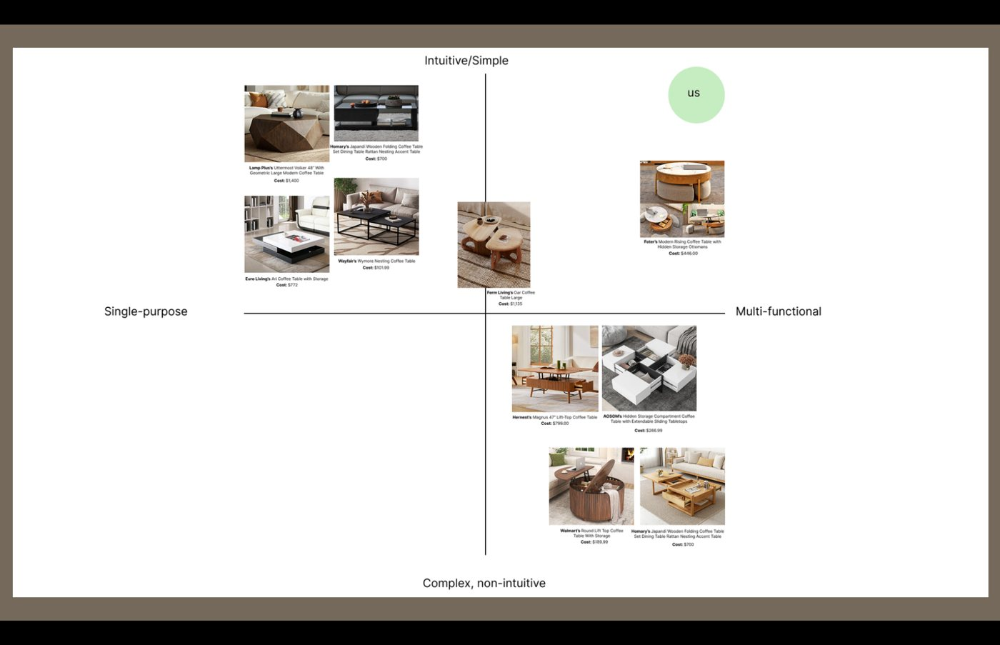
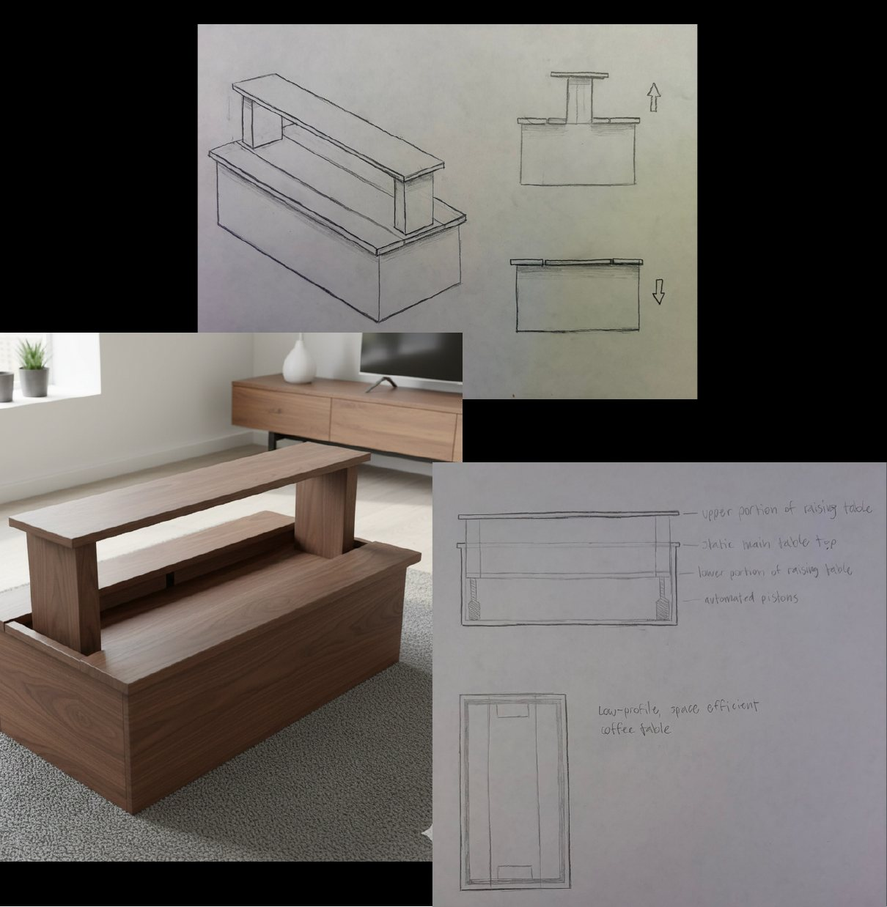
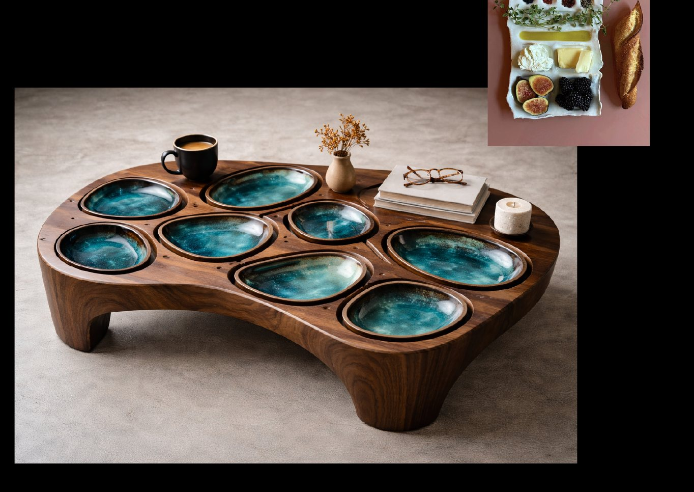
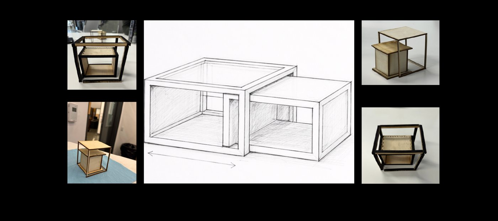
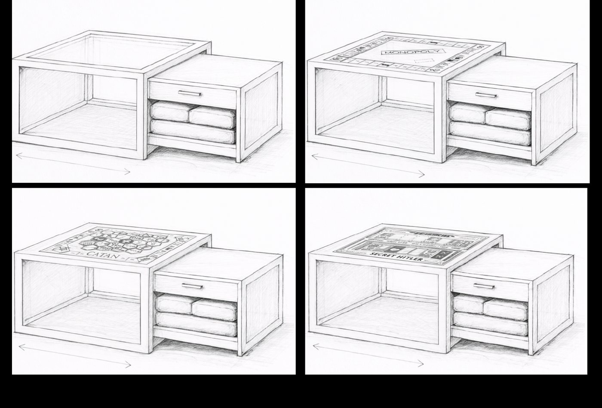

ACAD-445, Designing Products for Licensing
The Coffee Table
Problem statement
A young adult who feels stuck about furnishing a first apartment needs to find one piece that works for work, dining and hosting, but most furniture is cheap, bulky or single-use.
How It Went
-
MarketResearch
First Apartment Problems
Our market was 22 to 24 year olds and grad students furnishing their first place. They need furniture that's affordable on an entry-level budget, flexible enough for work, living and hosting, and small enough for a tiny apartment.
Most options make you pick: cheap but temporary, stylish but single-purpose, or functional but huge.
-
ResearchResearch
The Gap
We interviewed young professionals in small apartments and mapped what's out there. Almost nothing was both simple to use and multi-functional, so that's the corner we aimed for.

-
ResearchDesign
How Might We
Users should feel capable, settled, effortless, proud and unburdened.
- Let one table work for desk, dining and hosting?
- Get more surface without a bigger footprint?
- Make it expand in a way that's obvious without instructions?
-
IdeationDesign
Idea 1: Rising Top
A two-level top that lifts, so you can stow things and separate your private space from your social space.

-
IdeationDesign
Idea 2: Tapas Table
A sculptural wood table with ceramic bowls set into the surface, more art piece than furniture.

-
CriteriaProduct
Five Rules
- Intuitively simple: one motion, no tools, no wobble
- Multi-functional: coffee table, desk and dining surface
- Compact: built for apartments
- Modern: clean, neutral, premium
- Durable: no fragile finishes
-
Design lockDesign
Nested
We locked in a nesting design. Three pieces fit inside each other: an outer frame with a glass top, a mid-size wooden table, and a small table with an ottoman cushion. It triples in size with no moving parts or hardware.

References and first sketch 
First iteration -
FinalProduct
The Coffee Table
Coffee table, side table and ottoman, all at once or tucked into one. We built a mini version for class.